방송통신산업기사 (2022-03-12 기출문제)
1과목: 디지털 전자회로
1. 다음의 중간 탭형 변압기용 전파정류회로에서 다이오드 한 개가 개방되면 출력은 어떻게 되는가?
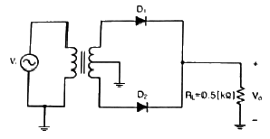
- 전파정류의 정상 진폭보다 큰 반파 정류가 된다.
- 전파정류의 정상 진폭보다 작은 반파 정류가 된다.
- 전파정류의 정상 진폭과 동일한 반파 정류가 된다.
- 전파정류의 정상 진폭과 동일한 전파 정류가 된다.
(정답률: 알수없음)

2. 다음 중 L형 평활회로가 비교한 C형 평활회로의 특성을 바르게 나타낸 것은?
- 직류 출력 전압이 낮다.
- 전압 변동율이 작다.
- 최대 역전압(PIV)이 높다.
- 시정수가 크며, 리플이 증가된다.
(정답률: 알수없음)
3. 정전압 회로의 입력전압을 Vi, 출력전압 Vo, 부하전류를 Io라 하면, 안정화 지수 S는 어떻게 표시되는가?
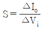
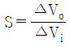
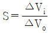
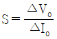
(정답률: 알수없음)
4. 다음 트랜지스터의 바이어스 회로에서 IB, IC, VCE는 얼마인가? (단, VBE = 0.7[V], VCC= 10[V], Rb = 200[kΩ], Re = 2[kΩ], Rc = 1[kΩ], hfe = 100)
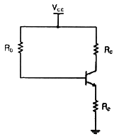
- IB = 46.2[μA], IC= 4.61[mA], VCE = 3[V]
- IB = 23.1[μA], IC= 23[mA], VCE = 4[V]
- IB = 18[μA], IC= 1.89[mA], VCE = 0.7[V]
- IB = 23.1[μA], IC= 2.31[mA], VCE = 3[V]
(정답률: 알수없음)
5. CR결합 증폭기에서 주파수특성은 저역, 중역 및 고역 대역으로 분류된다. 1단 CR결합 증폭기에서 중역전압이득 Avm = 100이고, 입력 RC 회로망의 저역 차단 주파수가 1[kHz]이다. 주파수 1[kHz]에서의 저역전압이득 Avl을 구하면 약 몇 [V] 인가?
- 33.3 [V]
- 50.4 [V]
- 65.7 [V]
- 70.7 [V]
(정답률: 알수없음)
6. 다음 중 FET 증폭회로의 응용으로 적합한 것은?
- 신호원 임피던스가 높은 증폭기의 초단
- 주파수 안정도를 높일 필요가 있는 증폭기의 끝단
- 신호원 임피던스가 높은 증폭기의 중간단
- 신호원 임피던스가 높은 증폭기의 끝단
(정답률: 알수없음)
7. 다음 중 송신기의 주파수 체배증폭기 및 RF 전력증폭기 등으로 주로 사용되는 것은?
- A급 증폭기
- B급 증폭기
- AB급 증폭기
- C급 증폭기
(정답률: 알수없음)
8. 다음 중 C급 증폭기의 특징이 아닌 것은?
- 효율이 높다.
- 출력단에 공진회로가 필요하다.
- 직선성이 좋다.
- 고출력용으로 사용된다.
(정답률: 알수없음)
9. 다음의 비안정 NE555회로에서 발진기의 출력(Vout) 듀티사이클 50[%] 미만으로 만들기 위한 조건으로 알맞은 것은?
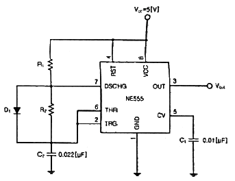
- R1 = R2
- R1 ＞ R2
- R1 ＜ R2
- R1C1 = R2C2
(정답률: 알수없음)
10. 다음 그림은 원 브리지 발진기의 블록도이다. 발진하기 위한 저항 R2의 값은? (단, 발진을 위한 개방루프 이득은 3)
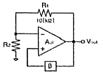
- 5[kΩ]
- 10[kΩ]
- 20[kΩ]
- 30[kΩ]
(정답률: 알수없음)
11. 다음 중 펄스 통신 방법이 아닌 것은?
- PCM(Pulse Code Modulation)
- PWM(Pulse Width Modulation)
- SSB(Single Side Band)
- PAM(Pulse Amolitude Modulation)
(정답률: 알수없음)
12. 진폭변조에서 반송파 전압이 5[V], 신호파 전압이 2[V]인 경우 변조도(m)는?
- 10[%]
- 20[%]
- 40[%]
- 60[%]
(정답률: 알수없음)
13. 다음 중 위상변조(PM)에 대한 설명으로 옳은 것은?
- 반송파의 진폭이 신호의 크기에 따라 비례한다.
- 반송파의 위상이 신호의 크기에 따라 비례한다.
- 반송파의 주파수가 신호의 크기에 따라 비례한다.
- 반송파의 주파수와 위상이 신호의 크기에 따라 비례한다.
(정답률: 알수없음)
14. 다음 중 디지털 변복조 방식을 사용하는 디지털 통신 시스템을 설계할 때 설계 목표라서 거리가 먼 것은?
- 최대 데이터 전송률
- 최소 심볼 오류
- 최소 점유 대역폭
- 최대 전송 전력
(정답률: 알수없음)
15. 펄스의 상승 부분에서 진동의 정도를 말하며, 높은 주파수 성분에 공진하기 때문에 생기는 것을 무엇이라 하는가?
- 세그(Sag)
- 오버슈트(Over Shoot)
- 충격계수(Duty Factor)
- 링깅(Ringing)
(정답률: 알수없음)
16. 다음 중 미분회로에 삼각파를 입력했을 때 출력파형은?
- 정현파
- 여현파
- 삼각파
- 구형파
(정답률: 알수없음)
17. 다음 중 슈미트 트리거 회로를 사용하여 변환 할 수 없는 파형은?
- 정현파를 구형파로 변환
- 삼각파를 구형파로 변환
- 삼각파를 펄스파로 변환
- 구형파를 정현파로 변환
(정답률: 알수없음)
18. 다음 그림과 같은 회로의 명칭으로 가장 적합한 것은? (단, Vi ＞ VR)
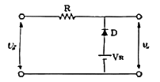
- Clipping Circuit
- Clamping Circuit
- Limiter Circuit
- Slicer Circuit
(정답률: 알수없음)
19. 다음 중 가중치 코드(Weighted Code)의 종류가 아닌 것은?
- 8421 코드
- 2421 코드
- 그레이 코드(Gray Code)
- 링카운터(Ring Counter) 코드
(정답률: 알수없음)
20. 다음 논리회로에서 출력 Y의 방정식을 간략하게 한 것은?
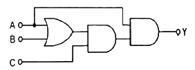
- Y = AC
- Y = ABC
- Y = AB + AC
- Y = AB + BC + AC
(정답률: 알수없음)
2과목: 방송통신 기기
21. 스튜디오 등 실내에서 음(Sound)를 내고 있다가 갑자기 음을 끊었을 때 음이 뚝 그치지 않고 차츰 감쇠해 가는 현상을 잔향이라 한다. 잔향시간은 음원을 끊고나서 음압레벨이 정상 상태의 값을 기준으로 몇 [dB] 저하될 때까지의 시간을 말하는가?
- 50[dB]
- 40[dB]
- 30[dB]
- 60[dB]
(정답률: 알수없음)
22. 다음 중 TV 주조정실에서 사용되는 방송장비가 아닌 것은?
- VCRVTR
- Master Swicher
- 방송송출용 Server
- Off-line editor
(정답률: 알수없음)
23. 다음 그림은 일반적인 TV 중계기의 블록도이다. (가), (나)에 들어갈 기능 블록으로 알맞게 짝지어진 것은?
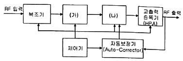
- (가) 변조기, (나) 채널 여파기
- (가) 혼합기, (나) 변조기
- (가) 익사이터(exciter), (나) 변조기
- (가) 변조기, (나) 익사이터(exciter)
(정답률: 알수없음)
24. 다음 중 중계차에 설치되는 방송제작용 장비가 아닌 것은?
- 카메라
- VMU
- CG
- 마이크로웨이브 시스템
(정답률: 알수없음)
25. 방송프로그램 송출의 안정성, 정확성, 인위적인 사고 방지에 가장 적합한 시스템은?
- 자동통제 시스템
- 자동모니터 시스템
- 자동보안 시스템
- 자동송출 시스템
(정답률: 알수없음)
26. 슈퍼헤테로다인 수신기의 중간주파수가 455[kHz]일 때 수신된 500[kHz]에 대한 영상 주파수는?
- 955[kHz]
- 1,410[kHz]
- 410[kHz]
- 1,545[kHz]
(정답률: 알수없음)
27. FM변조 시 피변조파의 소요대역폭은? (단, fs = 신호주파수, △f : 최대주파수편이)
- BW = 2(△f + fs)
- BW = 2△f + fs
- BW = △f + 2fs
- BW = △f + fs
(정답률: 알수없음)
28. 반송파 주파수가 102[MHz], 신호 주파수가 5[kHz]인 신호가 최대주파수 편이 25[kHz]로 주파수 변조되면 변조지수는 얼마인가?
- 2.5
- 5
- 10
- 15
(정답률: 알수없음)
29. MPEG의 프레임 GOP(Group Of Picture)구조 중 M=3인 경우 프레임의 순서에 대해 바르게 나열된 것은?
- IBBPBBPBBP.....IBBP
- IBPBPBPBP.....IBP
- IPPPPPPPPP.....IPPP
- IIIIIIIIIIIIII....III
(정답률: 알수없음)
30. 비디오 스위처에서 영상의 색상 차이를 이용하여 움직이는 피사체를 다른 화면에 합성할 때 사용하는 이펙트 키는?
- 크로마 키
- 루미넌스 키
- 리니어 키
- 매트 키
(정답률: 알수없음)
31. Nyquist(나이키스트) 주파수는 어떤 것인가?
- 표본화 주파수
- 중간 주파수
- 발진 주파수
- 수신 주파수
(정답률: 알수없음)
32. RF 증폭기의 입력신호전력이 60[μW]이고, 잡음전력이 2[μW] 이다. 이 때 출력에서 측정된 SNR이 17 이다. 여기서 T = 290[K] 라고 가정할 때 증폭기의 잡음계수는 약 얼마인가?
- 1.764
- 2.764
- 3.764
- 4.764
(정답률: 알수없음)
33. 우리나라에서 지상파 디지털 TV방송용으로 채택되고 있는 MPEG 영상신호 압축기술은?
- MPEG-1
- MPEG-2
- MPEG-3
- MPEG-7
(정답률: 알수없음)
34. 디지털 영상전송 과정 중 소스코딩에 해당되는 것이 아닌 것은?
- VLC 부호화기
- DCT 부호화기
- 히프만 부호화기
- 리드솔로먼 부호화기
(정답률: 알수없음)
35. 다음 중 지상파DMB에 대한 설명으로 틀린 것은?
- 전송방식은 OFDV 방식을 사용하고 있다.
- 영상압축규격은 MPEG-4 AVC(H.264) 방식이다.
- 음향압축규격은 MPEG-4 BSAC 방식이다.
- 현재 수도권에서 VHF 8번과 32번 채널을 통해 서비스 중이다.
(정답률: 알수없음)
36. 다음 중 영상 반송파의 신호레벨을 측정할 수 있는 계측기는?
- 벡터스코프
- 스펙트럼 분석기
- MPEG 프로토콜 분석기
- 웨이브폼 모니터
(정답률: 알수없음)
37. 다음 중 영상신호의 미분이득 특성에 대하여 측정이 가능한 계측기는?
- 웨이브폼모니터
- 주파수 카운터
- 오실로스코프
- 스펙트럼 아날라이져
(정답률: 알수없음)
38. 다음 중 송신기에서 부하변동에 따른 주파수의 변동을 방지하기 위하여 사용하는 회로는?
- 발진 증폭부
- 완충 증폭부
- 주파수 체배기
- 전력 증폭기
(정답률: 알수없음)
39. 다음 중 연주소에 대한 설명으로 옳은 것은?
- 연주소는 프로그램 제작 및 제작된 프로그램을 송신소나 방송위상국으로 송출하는 역할을 하는 곳이다.
- 연주소는 프로그램을 제작실로부터 전송받아서 일반 수신자에게 방송 전파를 송신하는 곳이다.
- 연주소는 방송국의 방송프로그램을 중계, 송신하여 방송국의 방송전파가 수신되지 않는 지역을 서비스하는 방송국이다.
- 연주소와 중계차와의 연결링크를 STL이라 한다.
(정답률: 알수없음)
40. 디지털 프로그램의 제작, 편집 시에 다른 방송국의 영상신호를 자국의 영상신호와 혼합하기 위해 양 신호를 동기시키는 장비는?
- 동조회로 장치
- 프레임 싱크로나이져
- DVE
- TBC
(정답률: 알수없음)
3과목: 방송미디어 개론
41. 초단파대의 방송 신호는 건물이나 지형지물에 의한 전파 반사에 의한 간섭이 발생하기 쉽다. 직접파 보다 300m의 거리를 더 진행한 반사파의 지연시간은? (단, 전파의 진행속도는 300,000[km/sec]로 가정한다.)
- 0.1[μs]
- 1[μs]
- 10[μs]
- 0.1[ms]
(정답률: 알수없음)
42. 우리나라에서 최초로 TV 방송을 개시한 텔레비전 방송국은?
- HLKZ-TV(DBC)
- TBC-TV
- KORCAD
- 서울 텔레비전 방송국(KBS-TV)
(정답률: 알수없음)
43. 다음은 방송의 분류에 대한 설명이다. 옳지 않은 것은?
- 전송로에 따라 유선방송, 무선방송 등으로 분류된다.
- 사용주파수에 따라 중파방송, 단파방송, 초단파방송으로 분류된다.
- 중파방송은 526.5[kHz]~1,606.5[kHz]의 전파를 이용하는 방송으로 120개 채널을 사용한다.
- TV방송은 단파(3~30[MHz])주파수의 전파를 이용하여 영상, 음성, 기타 음향을 보내는 방송이다.
(정답률: 알수없음)
44. 중파 라디오 방송의 사용 주파수대는?
- 526.5[kHz]~1.606.5[kHz]
- 30[MHz]~88[MHz]
- 3[GHz]~5[GHz]
- 30[kHz]~300[kHz]
(정답률: 80%)
45. 방송국에서 프로그램 제작 시 영상전환, 카메라 조정, 조명 및 음향 조정 등을 수행하는 곳을 무엇이라고 하는가?
- 부조정실
- 주조정실
- 플로어(Floor)
- SNG
(정답률: 알수없음)
46. 우리나라의 지상파 DMB 전송 시스템은 1개 사업자 블록 대역폭에서 1,536개의 OFDM Sub carrier를 전송한다. 이 때 각 Sub carrier의 간격은?
- 1[kHz]
- 1.25[kHz]
- 2[kHz]
- 10[kHz]
(정답률: 알수없음)
47. 디지털 라이도 방송 방식에서 기존 AM 또는 FM 방송 서비스 대역에서 아날로그 방송과 결합하여 동시에 서비스 할 수 없는 방식은?
- Eureka-147
- HD Radio(IBOC)
- DRM
- DRM Plus
(정답률: 알수없음)
48. 영상을 압축하는 방식 중 반복되어 나타나는 블록 정보들을 그 반복 횟수로 표현하는 부호화 방식은?
- Run length code
- Lempel-Ziv-Welch code
- Huffman code
- Trellis code
(정답률: 알수없음)
49. 4차 산업혁명 시대 미디어의 특징으로 가장 거리가 먼 것은?
- 디지털화(Digital)
- 방송과 통신의 컨버젼스화(Convergence)
- 이동성 및 상호작용 약화
- Cross Media화
(정답률: 알수없음)
50. 인터넷멀티미디어방송(IPTV)의 특징으로 틀린 것은?
- TCP/IP 통신규역 기반
- 음악과 동영상의 구현
- HFC 방식으로 망구성
- 사용자 요구에 따라 채널 선책 가능
(정답률: 알수없음)
51. 무선 신호 수신기 수신한계레벨이 –60[dBm]이고 수신신호의 세기가 –20[dBm]이면 Fade Margin은 몇 [dB] 인가?
- 30[dB]
- 40[dB]
- 50[dB]
- 60[dB]
(정답률: 알수없음)
52. 인터넷에서 영상이나 음성 등의 파일을 다운로드 없이 실시간으로 재생해주는 기법은?
- Pushing
- Caching
- Logging
- Streaming
(정답률: 알수없음)
53. 멀티캐스트와 연관되는 IPv4 주소 클래스는?
- Class A
- Class B
- Class C
- Class D
(정답률: 알수없음)
54. 전관방송 관련규정상 비상방송설비 설치대상 건축물에 해당되지 않는 것은?
- 연면적 3,500[m2] 이상 시설물
- 지하 층을 제외한 층수가 11층 이상인 것
- 지하층의 층수가 3층 이상인 것
- 지하층이 없는 3층 이상의 건물
(정답률: 알수없음)
55. RF신호를 불균형적으로 분배하고자 할 때 사용하는 수동기기로서 통상 삽입손실을 최소화하기 위해 2분기 형태로 사용되는 것은?
- Splitter
- Combiner
- Directional Coupler
- Matching Pad
(정답률: 알수없음)
56. CATV 전송망 구성 형태에서 분배선에서 가입자 댁내까지의 선로를 무엇이라 하는가?
- 초간선(Super Trunk line)
- 간선(Trunk line)
- 인입선(Drop line)
- 분배선(Feeder line)
(정답률: 알수없음)
57. 우리나라의 HDTV방송(ATSC 방식)의 유효화소와 유료라인은?
- 1,920 × 1,035
- 1,920 × 1,080
- 2,200 × 1,125
- 2,376 × 1,250
(정답률: 알수없음)
58. 위성방송회선의 다중접속방법이 아닌 것은?
- TDMA
- FDMA
- CDMA
- CSMA
(정답률: 알수없음)
59. 다음의 방송송출 및 중계시스템 중 위성과 관련이 있는 것은?
- FM
- STL
- TSL
- SNG
(정답률: 50%)
60. 다음 중 위성통신의 장점이 아닌 것은?
- 회선 구성의 유연성
- 내재해성
- 광역성, 다원 접속성
- 근거리 통신에 대한 경제성
(정답률: 알수없음)
4과목: 전자계산기 일반 및 방송설비기준
61. 인터럽트가 발생하였을 때 수행되는 프로그램(코드)을 무어시라고 하는가?
- ISR(Interrupt Service Routine)
- IVT(Interrupt Vector Table)
- IRQ(Interrupt Request)
- PCI(Peripheral Component Interconnect)
(정답률: 알수없음)
62. 다음 중 소프트웨어에 의한 우선순위 인터럽트의 특징이 아닌 것은?
- 인터럽트 요구가 많은 때에도 처리 속도가 빠르다.
- 융통성을 부여할 수 있다.
- 특별한 하드웨어가 필요하지 않다.
- 프로그램으로 처리하기 때문에 속도가 늦다.
(정답률: 알수없음)
63. “서울”이라는 단어를 컴퓨터에 저장하려면 몇 바이트(Byte)가 필요한가?
- 2바이트
- 3바이트
- 4바이트
- 5바이트
(정답률: 알수없음)
64. 연산방식에 대한 설명 중 맞는 것은?
- 직렬 연산 방식은 연산속도가 빠르다.
- 직렬 연산 방식은 하드웨어(Hardware)가 복잡하다.
- 병렬 연산 방식은 연산 속도가 빠르다.
- 병렬 연산 방식은 하드웨어(Hardware)가 간단하다.
(정답률: 알수없음)
65. 다음 중 제조 단계에서 모든 내용을 0 또는 1로 출력되도록 생산하여 사용자가 직접 Writer를 사용하여 1회에 한하여 프로그램 할 수 있는 ROM은?
- Mask ROM
- PROM
- EPROM
- EEROM
(정답률: 알수없음)
66. 6개의 입력을 가지는 1개의 OR 게이트에서 전체 입력 조합 중 몇 개가 HIGH 출력을 만드는가?
- 31
- 32
- 63
- 64
(정답률: 알수없음)
67. 다음 중 부울대수가 옳지 않은 것은?
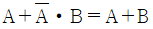
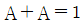
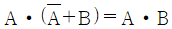
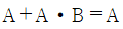
(정답률: 알수없음)
68. 다음 중 DMA(Direct Memory Access)에 관한 설명으로 옳은 것은?
- DMA 제어기는 자료 전송을 완료하면 인터럽트를 발생시킨다.
- DMA 사용으로 CPU와 메모리 간 데이터 전송이 빨라진다.
- DMA를 적용하면 하드웨어 구성이 단순화 된다.
- DMA를 통해 메모리의 기억 용량이 증가한다.
(정답률: 알수없음)
69. 다음 중 중앙처리장치의 구성 및 기능에 관한 설명이 틀린 것은?
- 중앙처리장치는 제어 장치와 연산 장치로 구성되어 있다.
- 제어 장치는 주기억장치에 대한 입출력 동작을 포함한 컴퓨터 시스템 일체를 제어한다.
- 연산 장치는 데이터에 대한 산술과 논리 연산을 수행한다.
- 데이터가 처리될 때마다 그 데이터는 먼저 입출력 장치에 저장되고, 중앙처리장치(CPU) 내에 있는 전자회로가 프로그램에 있는 명령어를 번역하여 처리하게 한다.
(정답률: 알수없음)
70. 다음 중 입출력장치와 CPU의 실행속도 차를 줄이기 위해 사용하는 것은?
- Channel
- Parallel I/O device
- Cycle steal
- DMA
(정답률: 알수없음)
71. 종합유선방송사업의 정의에서 괄호 안에 들어 갈 용어로 적절한 것은?
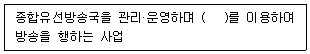
- 전송·통신설비
- 방송·선로설비
- 전송·선로설비
- 종합·방송설비
(정답률: 알수없음)
72. 다음 중 방송의 정의에 해당되지 않는 것은?
- 텔레비전 방송
- 라디오 방송
- 데이터 방송
- 이동무선 방송
(정답률: 알수없음)
73. 다음 중 방송법에서 정의하는 방송사업의 종류가 아닌 것은?
- 지상파방송사업
- 종합유선방송사업
- 인터넷방송사업
- 방송채널사용사업
(정답률: 알수없음)
74. 전파법이 정하는 바에 따라서, 지상파방송사업을 하고자 하는 자는 어느 기관의 허가를 받아야 하는가?
- 중앙전파관리소
- 한국방송통신전파진흥원
- 방송통신위원회
- 방송문화진흥회
(정답률: 알수없음)
75. 다음 괄호 안에 들어갈 말로 알맞은 것은?
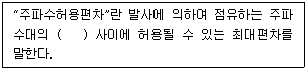
- 기준주파수와 지정주파수
- 특성주파수와 중심주파수
- 중심주파수와 지정주파수
- 중심주파수와 기준주파수
(정답률: 알수없음)
76. 다음 중 주파수대의 주파수 범위와 미터 표시로 틀리게 연결된 것은?
- 30[kHz] 초과 300[kHz] 이하 - 킬로미터파
- 300[kHz] 초과 3,000[kHz] 이하 - 센터미터파
- 30[kHz] 초과 300[kHz] 이하 - 미터파
- 300[kHz] 초과 3,000[kHz] 이하 – 데시미터파
(정답률: 알수없음)
77. 입력신호 에너지를 간선에서 지선으로 불균등하게 분리시키는 장치를 분기기라 하는데 종단 저항값은?
- 600[Ω]
- 75[Ω]
- 100[Ω]
- 10[Ω]
(정답률: 알수없음)
78. 다음 중 방송 공동수신 안테나 시설에 사용하는 설비와 관련 없는 것은?
- 주파수 변환기
- 분배기 및 분기기
- 신호처리기
- 레벨변환기
(정답률: 60%)
79. 개설하려는 방송국의 송신안테나 위치 중 과학기술정보통신부장관이 지정하는 지점에서 떨어져야 하는 최소한의 거리에 맞지 않는 것은?
- 100와트 초과 1킬로와트까지 : 0.5킬로미터
- 1킬로와트 초과 5킬로와트까지 : 2킬로미터
- 5킬로와트 초과 20킬로와트까지 : 4킬로미터
- 20킬로와트 초과 : 6킬로와트
(정답률: 알수없음)
80. 다음 중 통신공동구의 설치기준에 알맞지 않은 것은?
- 통신케이블의 수용에 필요한 공간과 설치 및 유지·보수 등의 작업공간 확보
- 조명·배수·소방·환기 및 접지시설 등 통신케이블의 유지·관리에 필요한 부대설비 설치
- 통신공동구와 관로가 접속되는 지점에 통신케이블의 분기를 위한 분기구 설치
- 통신케이블은 전력선과 함께 설치하며, 주로 직매 케이블을 사용하여 설치
(정답률: 알수없음)